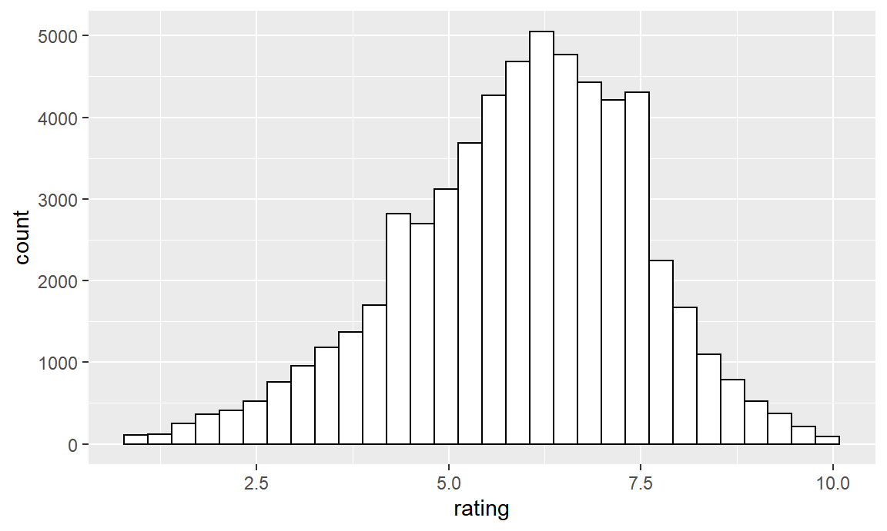

Chapter 4 Advanced plots
Often, you want to compare plots for different categories of a variable. In our example, we looked for which combinations of table and depth, the cut of the diamond was good. We now want to know whether there is a difference between the 8 different clarity levels in the data. One way would be to make 8 different plots, one for each of the levels. However, this would be cumbersome to put together. Fortunately, we can use the function facet_grid to create different plots within a plot.
4.1 Using Facets
This function expects a formula in the form of A ~ B where A and B are two categorical variables. For each combination of values of A and B, a different plot will be constructed, and they will be arranged in a grid where the values of A each constitute a row and the values of B each constitute a column. Comparisons of more than 2 variables are possible using a formula of the form A + B ~ C. A comparison along one variable is possible by using a dot instead of a variable name, i.e. . ~ A or A ~ . .
In the following plot, we use facets to redraw our plot for each of the clarity levels. Furthermore, the legend is placed on top to create more space.
ggplot(diamonds) +
geom_point(aes(table, depth, col = cut)) +
labs(title = "Comparing table and depth of diamonds",
subtitle = "What combination of table and depth gives good quality diamonds?",
x = "Table",
y = "Depth") +
theme_light() +
coord_cartesian(xlim = c(45,75), ylim = c(50, 75)) +
scale_x_continuous(breaks = seq(45,75,5)) +
scale_y_continuous(breaks = seq(50,75,5)) +
scale_color_brewer(palette = "Set1", name = "Diamond Cut Quality") +
facet_grid(. ~ clarity) +
theme(legend.position = "top")
An alternative, mostly suitable for comparisons along one variable, is facet_wrap. Instead of making one row (like facet_grid does), it will order the plots in a grid with a specified number of columns or rows. Below, we ordered them in 3 columns.
ggplot(diamonds) +
geom_point(aes(table, depth, col = cut)) +
labs(title = "Comparing table and depth of diamonds",
subtitle = "What combination of table and depth gives good quality diamonds?",
x = "Table",
y = "Depth") +
theme_light() +
coord_cartesian(xlim = c(45,75), ylim = c(50, 75)) +
scale_x_continuous(breaks = seq(45,75,5)) +
scale_y_continuous(breaks = seq(50,75,5)) +
scale_color_brewer(palette = "Set1", name = "Diamond Cut Quality") +
facet_wrap( ~ clarity, ncol = 3) +
theme(legend.position = "top")4.2 Reordering barplots
When working with barplots it might happen that you want to order the bars in a increasing or decreasing fashion. Consider again the example below.
filter(movies, year == 2004, budget > 100000000) %>%
ggplot() +
geom_col(aes(title, budget)) +
coord_flip()
To do this, we can use the reorder function. The reorder function has two arguments: the variable to reorder, in this case the movie titles, and the variable to use for reordering, in this case the budget.
filter(movies, year == 2004, budget > 100000000) %>%
ggplot() +
geom_col(aes(reorder(title, budget), budget)) +
coord_flip()
Can you find how to reorder the movies in the reverse direction?
4.3 Combining multiple geometric layers
So far, we only used one geometric layer at a time. However, it is perfectly possible to combine different layers. For instance, we can use the geom_text label to add data labels to a bar plot. Geom_text is a geometric layer which we can use, indeed, to put text in a graph. We didn’t see geom_text before, however, its working will be straigtforward, based on all the things we already know. We build further upon the last graph, which we have given a slightly nicer appearance
filter(movies, year == 2004, budget > 100000000) %>%
ggplot() +
geom_col(aes(reorder(title, budget), budget/1000000), fill = "grey") +
coord_flip() +
labs(title = "Movies budgets",
subtitle = "What was the budget of the movies from 2004 with a budget higher than 100 million?",
x = "Title",
y = "Budget (in million dollars)") +
theme_light()
Note that we changed the y-aesthetic to budget/1000000, such that the values are in millions. Furthermore, it is important to remark that, since we used coord_flip, our labels set in labs also switched. Thus the x-label appears on the y-axis and the y-label on the x-axis. This is exactly what we would prefer, as removing coord_flip in the future won’t mess up the labels.
We would now like to put the exact number of millions on top of the bars. In order to do this, we add geom_text, and give it the same mapping for x and y as the geom_col layer. Furthermore, we add a mapping for the label, i.e. the text to be displayed. We give the text a bold fontface and a white color. Finally, setting hjust to 1 will make sure that the textlabels are horizontally aligned to the left. This makes sure that the text is entirely within the bars, and doesn’t fall out of them.
filter(movies, year == 2004, budget > 100000000) %>%
ggplot() +
geom_col(aes(reorder(title, budget), budget/1000000), fill = "grey") +
geom_text(aes(reorder(title, budget), budget/1000000,
label = budget/1000000), color = "white", fontface = "bold", hjust = 1) +
coord_flip() +
labs(title = "Movies budgets",
subtitle = "What was the budget of the movies from 2004 with a budget higher than 100 million?",
x = "Title",
y = "Budget (in million dollars)") +
theme_light()
The addition of the second geom layer seemed a little bit cumbersome, as we needed to repeat the mapping for x and y, which was made even worse because it involved the reorder function and the division by a million. Surely, there is a better way to do this? We call it aes-inheritance.
4.4 Aes-inheritance
Aes-inheritance, or inheritance of the aes-mapping, means that each of the geom layers which is added to a ggplot call inherits the mapping which is specified in that ggplot function call. As you may remember from the very beginning, an aes-mapping can be placed in both geom layers as in ggplot. In the end, we learn there is a little but importance difference.
When different layers have (part of) a mapping in common, it is best practice to move this part to the ggplot call. As such, you don’t have to repeat this in any of the layers which use it. And, if any of the layers doesn’t use this mapping, you can easily overwrite it by specifying a new mapping whithin that layer. Let’s look at an example.
The previous plot we made can more easily be made as follows:
filter(movies, year == 2004, budget > 100000000) %>%
ggplot(aes(reorder(title, budget), budget/1000000)) +
geom_col(fill = "grey") +
geom_text(aes(label = budget/1000000), color = "white", fontface = "bold", hjust = 1) +
coord_flip() +
labs(title = "Movies budgets",
subtitle = "What was the budget of the movies from 2004 with a budget higher than 100 million?",
x = "Title",
y = "Budget (in million dollars)") +
theme_light()
By moving the mapping for x and y to ggplot, there is no mapping needed in geom_col, and only a mapping for label in geom_text. Both geom layers inherit the other part of the mapping for the ggplot function call. Truly, this seems far more efficient!